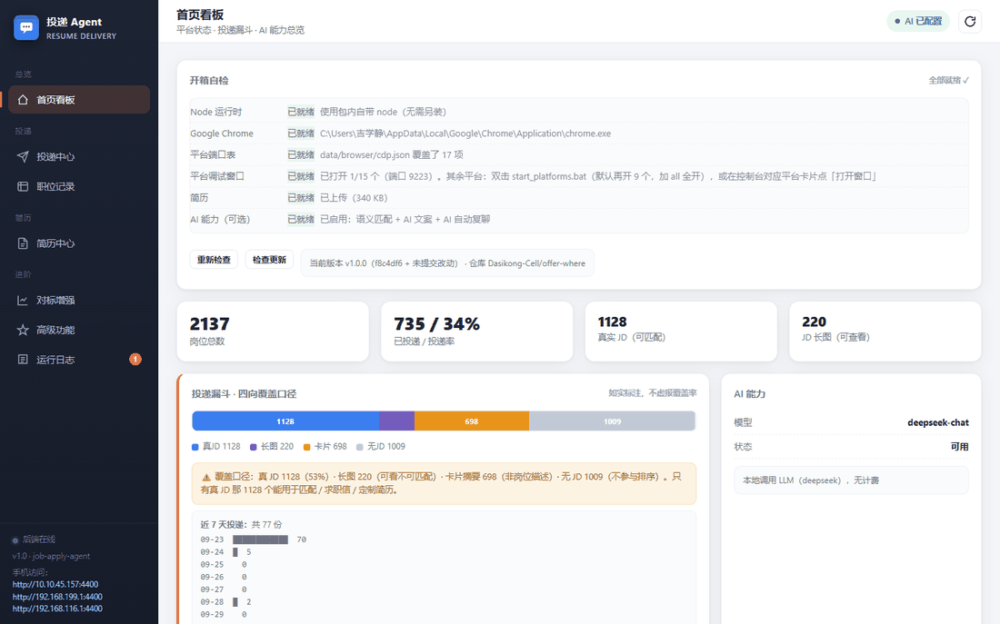
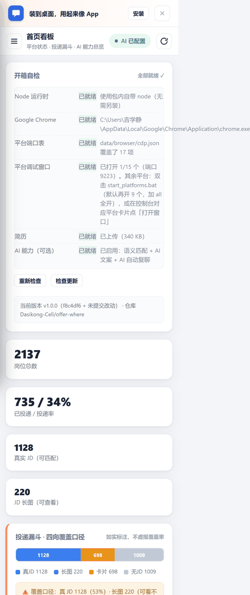
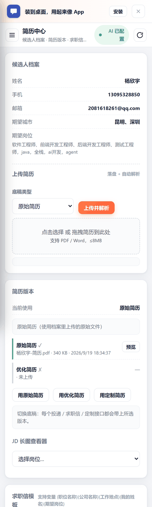
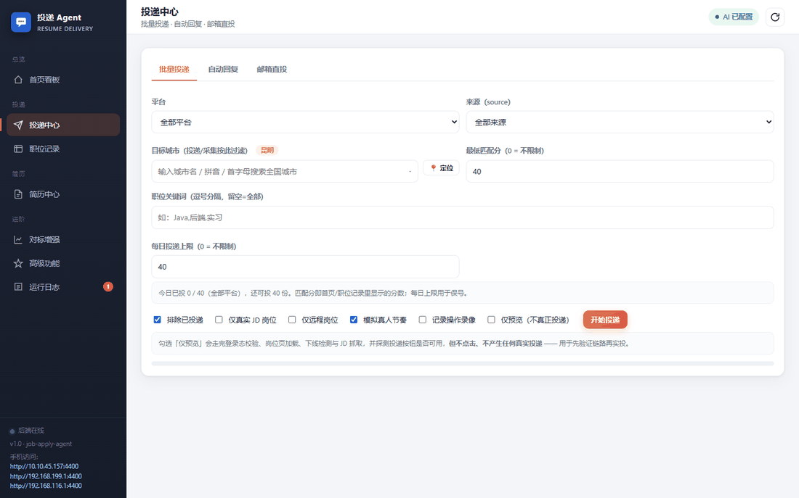
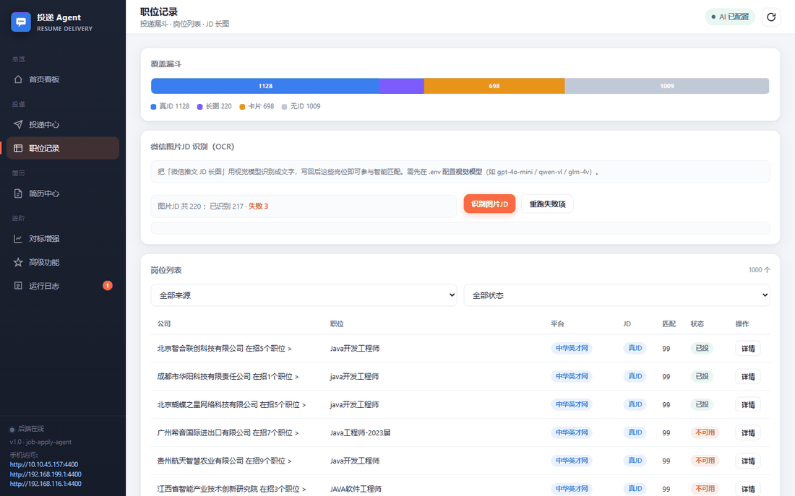

1开始之前，先确认两件事
| 检查项 | 要求 |
|---|---|
| 电脑系统 | Windows 10 1803 以上（Win11 也行） |
| 浏览器 | 要装 Google Chrome 工具靠它去点招聘网站的按钮，没装用不了 |
2安装（约 3 分钟）
OfferWhere-Setup.exe（约 362 MB）。
只有这一个文件要下载，其它不用管。OfferWhere-Setup.exe，会弹出安装向导。
不用管理员权限，如果弹权限窗口，直接允许即可。用便携 zip 的：这一页也随包发出来了，就在解压目录的
public\guide\index.html，
双击即可（配图在同目录的 img\ 里，别只单独拷走那个 html）。3第一次启动：让「窗口」都出来
双击图标后，程序会自动做这些事（你不用管）：
- 启动本地服务（端口 4400）
- 为 5 个核心平台各开一个 Chrome 调试窗口（BOSS直聘 / 猎聘 / 前程无忧 / 智联招聘 / 官网渠道）
- 打开操作界面（叫「控制台」）
过一会儿屏幕上应该出现 5 个 Chrome 窗口 + 一个控制台窗口。

4关键一步：在每个窗口里扫码登录
这是最重要的一步。工具不会帮你登录，也不需要你的密码—— 你需要在每个 Chrome 窗口里，用手机扫码登录对应网站。
| 窗口 | 登录方式 |
|---|---|
| BOSS直聘 | 手机 App 扫码 |
| 猎聘 | 手机 App 扫码 |
| 前程无忧 | 扫码 / 账号密码 可能会弹滑块，手动滑一下 |
| 智联招聘 | 手机 App 扫码 |
| 官网渠道 | 视具体网站而定 |
每个网站都要单独登录一次，因为它们互相独立。
另外 12 个平台：先看「能力标签」再决定要不要开
「平台通道」页里一共登记了 16 个平台，但它们不是都能自动投递。 每张卡片右上角有个标签：
| 标签 | 数量 | 含义 |
|---|---|---|
| 全套 | 4 | BOSS直聘 / 猎聘 / 前程无忧 / 智联招聘 采集 + 投递 + 复聊 + 求职信都支持，主力平台 |
| 可投递 | 7 | offerbiu / 牛客网 / 中华英才网 / 鱼泡直聘 / 国聘 / 应届生求职网 / 网申 能投，但能力较基础 |
| 待接入 | 5 | 易直聘 / 58同城招聘 / 店长直聘 / 脉脉高聘 / 赶集招聘 还不能自动投递 |
要开更多窗口：双击程序目录里的 start_platforms.bat（默认开 10 个）；
想全开就加参数：start_platforms.bat all（开全部 16 个）。
🔴 怎么确认真的登录成功了？
这一步最容易出错，请务必按下面的方法确认：
打开控制台，点左边「平台通道」，每个平台卡片上有两个按钮： 「检查登录」 和 「打开窗口」。 点「检查登录」→ 状态显示 「已登录」 才算成功。
首页的「开箱自检」是给你看的清单
控制台首页有张卡片叫「开箱自检」，会把「还差什么」直接列出来。一共 6 项：
| 自检项 | 说明 |
|---|---|
| Node 运行时 | 包内自带，永远是「已就绪」，不用管 |
| Google Chrome | 没装 Chrome 会显示「待处理」→ 去装一个 |
| 平台端口表 | 内置默认值，正常就是好的 |
| 平台调试窗口 | 显示「已打开 N/16 个」。只要 N ≥ 1 就判「已就绪」，但 N 太少会导致能投的平台少 |
| 简历 | 没上传会显示「待处理」→ 去「简历中心」上传 |
| AI 能力（可选） | 没配也是可用的，只是匹配质量略降 |

5填好「在线简历」
招聘网站投递时，用的是你在该网站上填的在线简历，不是工具里的。 所以请先在每个网站把自己的在线简历填完整：
- 工作 / 项目经历
- 教育经历
- 期望职位与城市
- 联系方式
另外：在工具里也上传一份简历。左侧边栏点「简历中心」→「上传简历」， 选 PDF / Word（≤ 8MB）。AI 匹配和文案会用到这一份。

6开始投递
控制台左侧边栏 →「投递中心」。里面有「批量投递 / 自动回复 / 邮箱直投」三个页签， 默认打开的就是批量投递。

按从上到下填：
| 字段 | 怎么填 |
|---|---|
| 平台 | 默认「全部平台」，也可以只选某一个网站 |
| 来源（source） | 默认「全部来源」，一般不用改 |
| 目标城市 | 输入城市名 / 拼音 / 首字母搜（不选 = 全部城市）；右边有「📍 定位」可按 IP 猜 |
| 最低匹配分 | 默认 40（0 = 不限制）。分太低会投一堆不相关的岗位 |
| 职位关键词 | 如 Java,后端，逗号分隔；留空 = 全部 |
| 每日投递上限 | 默认 40（0 = 不限制）。别调太高 |
下面有一排勾选框（默认已勾好，一般不用动）：
| 勾选框 | 默认 | 作用 |
|---|---|---|
| 排除已投递 | ✓ 已勾 | 投过的不重复投（建议保持勾选） |
| 仅真实 JD 岗位 | 未勾 | 跳过只有图片、没文字的岗位 |
| 仅远程岗位 | 未勾 | 按需 |
| 模拟真人节奏 | ✓ 已勾 | 保持勾选——它会放慢操作速度，降低被网站风控的概率 |
| 记录操作录像 | 未勾 | 出问题时可以回看（占空间，按需） |
| 仅预览（不真正投递） | 未勾 | 第一次用请务必勾上它 |
强烈建议：第一次先勾「仅预览（不真正投递）」。
勾上后点「开始投递」，它不会真的投，但会完整走一遍流程： 检查登录态 → 加载岗位页 → 检测岗位是否已下线 → 抓取 JD → 探测投递按钮能否点。
这一步是给你确认用的：它会告诉你「哪些岗位投得出去、文案长什么样」。 确认没问题后，取消勾选「仅预览」，再点一次「开始投递」——这次才是真的投。
投递结果去左侧「职位记录」看，失败的岗位和原因都在那里。 界面上还有个「停止」按钮，投到一半不想继续可以随时停。

几个降低风险的习惯
- 保持「模拟真人节奏」勾选——别关掉它去追求速度
- 每日投递别拉满——默认 40 个够用了
- BOSS 直聘尤其要慢——它反爬最严，登录后建议先手动浏览几个页面再交给自动化
- 猎聘要放慢——连续快速访问会触发短信验证
- 先「仅预览」再真投——别一上来就批量投
7还有个用法：手机上看
如果你想把手机也变成操作端（同一 Wi-Fi 下）：
双击安装目录里的 start_lan.bat，它会打印一个手机能打开的网址。
?常见问题
双击后提示「未知发布者」/「Windows 已保护你的电脑」
没有出现 Chrome 窗口
- 确认装了 Google Chrome（在「设置 → 应用」里看有没有）
- 关掉所有 Chrome 窗口，重新双击图标启动一次
控制台显示「连不上后端」
- 等 10–20 秒再刷新（第一次启动比较慢）
- 还是没有的话，关掉所有窗口重新启动一次
投递了但好像没成功
按顺序检查：
- 平台上真的登录了吗？（见第 4 节，先看「开箱自检」是否全部就绪）
- 平台的在线简历填完整了吗？（见第 5 节）
- 打开左侧「职位记录」，看这些岗位的状态和失败原因
如果大部分都失败，通常是登录态掉了。回第 4 节重新确认一遍。
会不会封我的号？
工具用的是你的真实账号、真实浏览器，通过「模拟真人节奏」放慢操作速度。 正常使用和人工点的节奏差不多。
但如果你关掉「模拟真人节奏」、或把「每日投递上限」拉得很高，是有风险的。
我的简历和数据会被别人看到吗？
不会。所有数据都在你自己的电脑上：
- 简历文件在你电脑的安装目录里
- 招聘网站的登录状态存在你电脑的 Chrome 配置里
- 没有「我们的服务器」—— 这个工具不上传、不中转、也不存到任何云端
三件你会问的事，说清楚（默认装完就是这样，不需要你做任何设置）：
- 你投出去的简历和打招呼内容，当然会发给招聘网站本身（否则投不了）， 但只有它们能看到
- 控制台上的「检查更新」按钮会去查一次最新版本号，只在你点它的时候发生， 不点就不联网
- 可选的「AI 智能匹配 / 文案撰写」需要你自己填一个大模型网关地址才会启用； 不填就完全没有这一步，匹配走本地规则
用久了会不会很占磁盘？
会占一两个 GB，但不会一直涨。安装目录下的 data\ 记录你的登录态与投递痕迹。
每次启动都会自动清理，不用你管：
- 投递截图：留 14 天，更早的自动删
- 运行日志：留 30 天
- 数据库备份：只留最近几份
真正不会自动清的是 data\browser —— 那是你的登录态（约 500 MB），
别手动删，删了每个平台都得重新扫码登录。
想彻底删掉
「设置 → 应用 → 已安装的应用」里找到 OfferWhere → 卸载。
!请遵守
这个工具是用你自己的账号帮你省时间的，不是让你去批量骚扰 HR。
- 投递速度保持正常，别刷
- 投的岗位看清楚，别乱投
- 招聘网站的用户协议仍然适用
有任何问题问我。